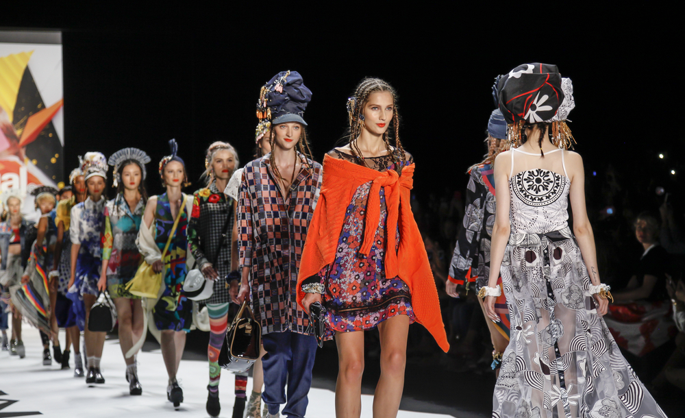

La moda en 2025 sigue evolucionando con una fuerte influencia de la tecnología y la sostenibilidad. Las prendas inteligentes, con tejidos que se adaptan a la temperatura y cambian de color, son tendencia, mientras que la moda circular gana protagonismo con materiales reciclados y biodegradables. Los estilos minimalistas y futuristas dominan las pasarelas, con tonos metálicos y cortes asimétricos. Además, la inteligencia artificial juega un papel clave en la personalización de outfits, permitiendo a cada persona expresar su estilo de forma única e innovadora.
A continuación, un video que muestra algunas de las tendencias más innovadoras en la moda por parte de la famosa "lupita villalobos"✨ :